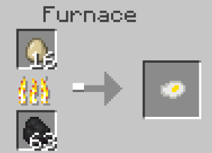

Cooked Egg
It's an egg, and it sure is cooked alright!
Creation
To make a Cooked Egg, simply put an egg into a furnace. It will output a cooked egg when finished.
Information
This food supplies 4 hunger points and 2.4 saturation. Cooked Eggs can also be used to make an Omlette.